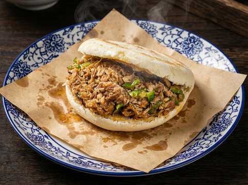
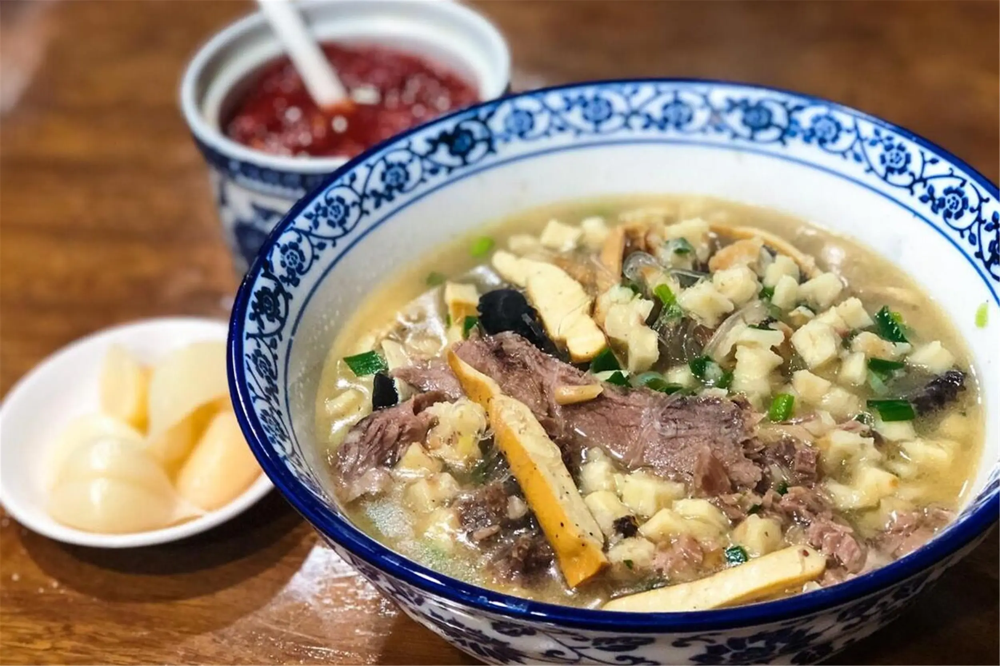
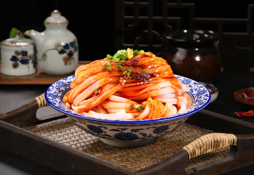
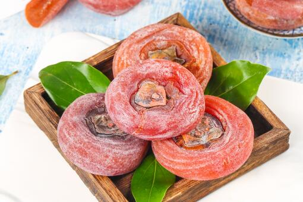
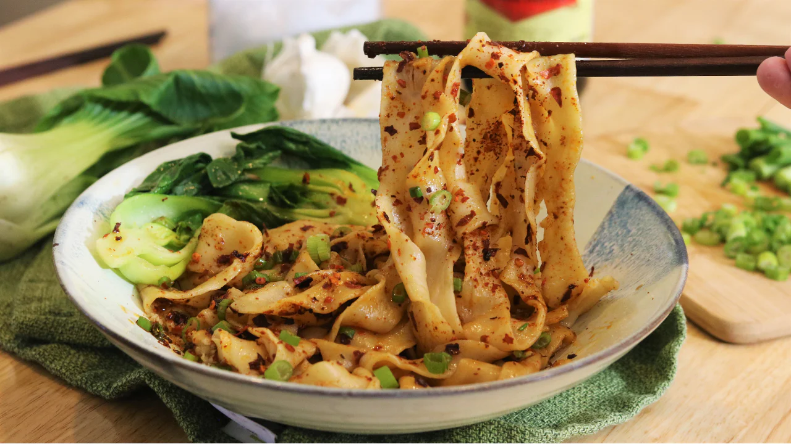
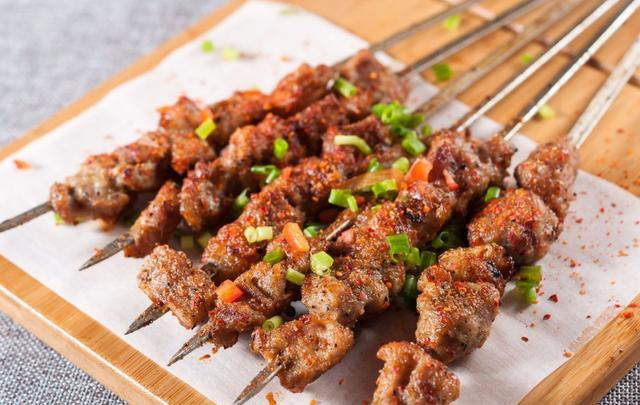

🥢 Hidden Flavors of Muslim Quarter
The Soul of Xi'an is Edible
The Muslim Quarter isn't just a street — it's a living museum of culinary exchange along the Silk Road. For over 1,300 years, Hui Muslim communities have shaped Xi'an's food identity, blending Central Asian spices with Chinese techniques.
This guide takes you off the main drag (Huimin Street) and into the back alleys where grandmas still hand-pull noodles and 50-year-old recipes are guarded like state secrets.
generations of recipes in some family stalls

Roujiamo @ Ziwulu Zhangji
The "Chinese hamburger" that predates sandwiches by centuries. Hand-slapped baijimo bread, crisp outside, pillowy inside, stuffed with pork belly braised for hours in a secret spice blend.

Yangrou Paomo @ Yizhen Lou
A ritual as much as a meal. You receive a bowl with flatbread and spend 20 minutes breaking it into pea-sized pieces. The chef then drowns it in rich lamb broth with glass noodles and tender meat.

Qin Town Liangpi @ Xue Changli
Cold, slippery rice noodles swimming in chili oil, black vinegar, and crushed garlic. Born in the countryside west of Xi'an, this dish is the unofficial taste of Shaanxi summers.

Fried Persimmon Cakes @ Lao Xu's
Lintong fire persimmons kneaded into golden dough, stuffed with osmanthus sugar and walnuts, then pan-fried until the edges caramelize. A dessert that tastes like autumn.

Biang Biang Noodles @ Old Alley
Named after the sound of dough slapping against the counter. These belt-wide noodles come topped with chili flakes, garlic, and hot oil that sizzles on contact — pure Shaanxi theatre.

Lamb Skewers @ Sajinqiao Night Market
Cumin-dusted lamb skewers grilled over charcoal by Uyghur and Hui vendors. The aroma alone will pull you down the alley. Order by the handful — they disappear fast.
🗺️ Navigating the Quarter
🏮 Huimin Street
The tourist strip — fun for people-watching but prices are inflated. Good for first-timers to orient yourself.
🍜 Dapiyuan
The local secret — quieter, older, more authentic. Home to Yizhen Lou and family-run dumpling shops.
🥟 Sajinqiao
The breakfast champion — come hungry before 10am. The best beef patties and spicy soup in town.
🧆 Beiyuanmen
Snack alley central — dried fruits, nuts, and sesame candy. Perfect for edible souvenirs.